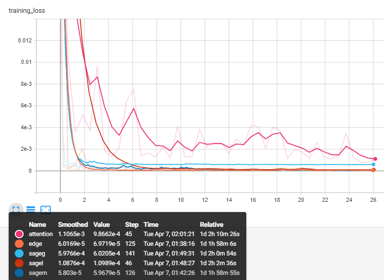
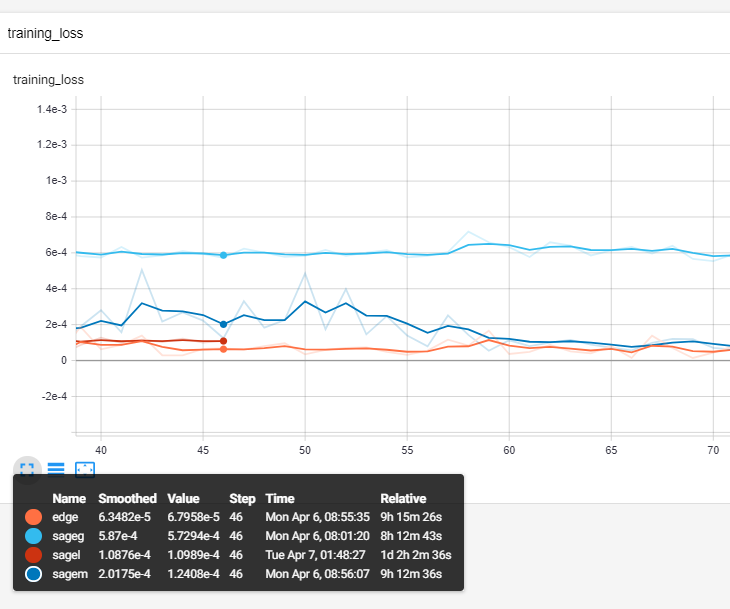
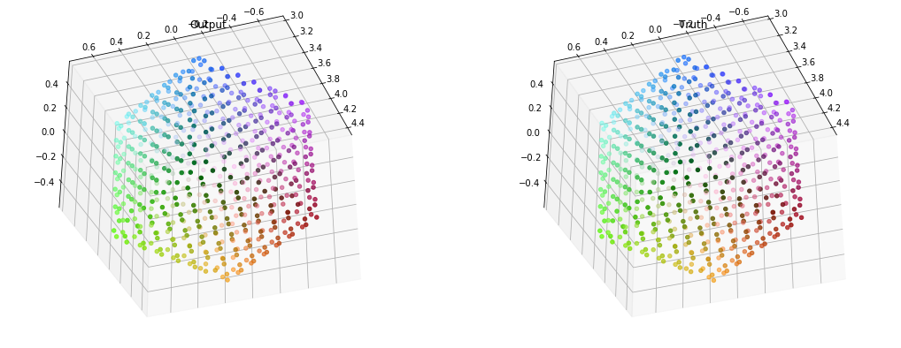
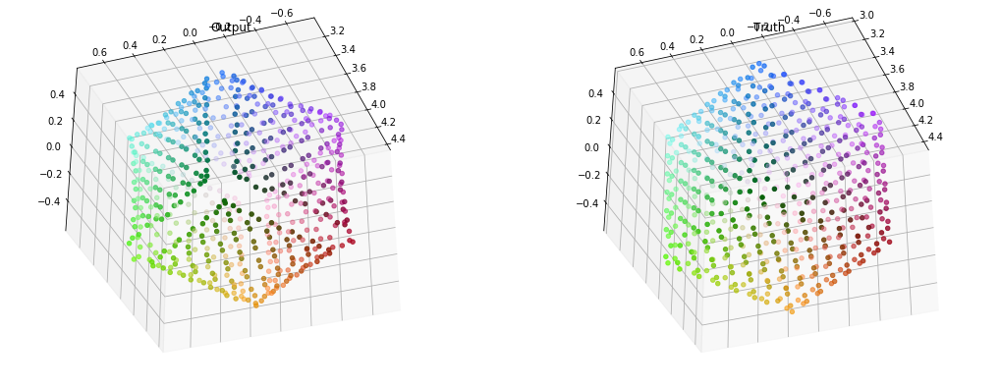
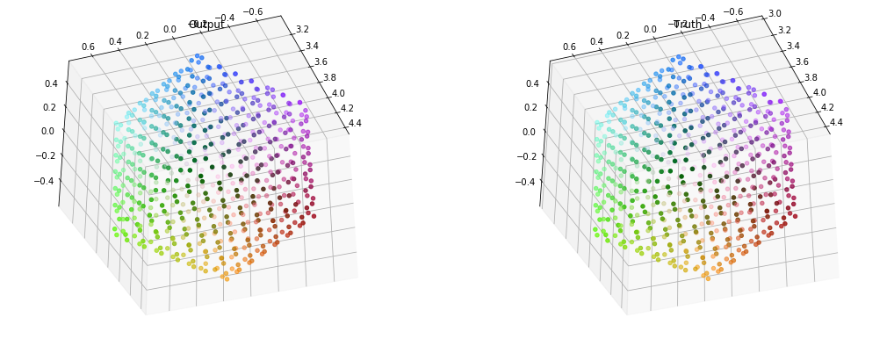
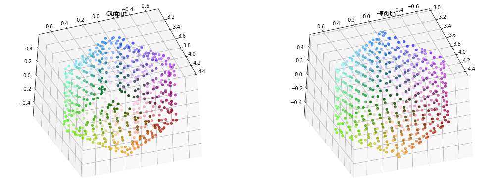
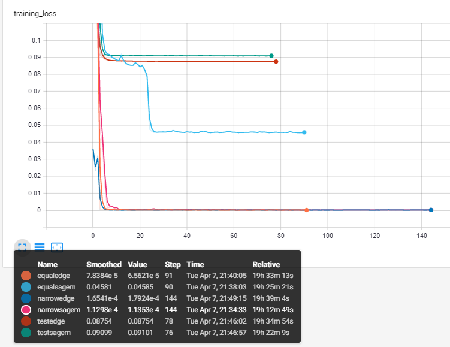
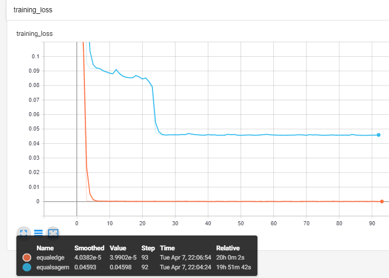

Phase 2: Cube encoding
Graph
The test object is simple, it is a cube
Checkpoint 1: GCNs
Conclusion: GCNs fail to learn sharp edges
Other graph convs!
Specs:
- Layers: 3-32-32-32-3
- Activation: Leaky relu
- Loss: MSE + MAE
- SAGEm: SAGEconv with mean aggregation
- SAGEl: SAGEconv with LSTM aggregation
- SAGEg: SAGEconv with GCN aggregation
- Edge: Edgeconv
- Attention: Graph attention network, 1-head

Loss

Closer look at loss
SAGEConv

SAGEm loss: 0.004168

SAGEg loss: 0.01587

SAGEl loss: 0.005061
EdgeConv
Edge loss: 0.005223
Graph attention networks

GAT loss: 0.02380
Edge and sageM was able to do the trick
Pushing limits
Test limits and ability of network architecture
Specs:
- Activation: Leaky relu
- Loss: MSE + MAE
- SAGEm: SAGEconv with mean aggregation
- Edge: Edgeconv
- Test: 3-32-16-4-1-3
- Narrow: 3-32-3
- Equal: 3-3-3-3-3

Loss
Equals

Equal Loss
edge
sagem
Narrows
- test if number of hidden units effect result
edge
sagem
if doesntwork test amaller edgenet
Combinations with dense and dropout
Params: equal 3-3-3-3-3